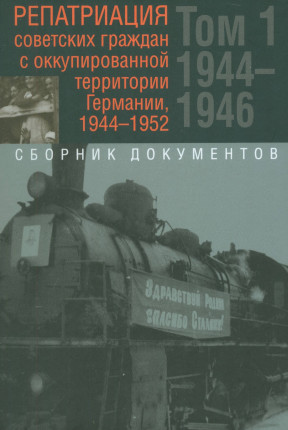
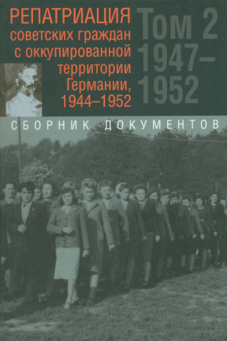

Сортувати за
Додано: 2023-11-26
Вторая мировая война. В 6 томах (в 3 книгах)

Черчилль Вінстон
Вторая мировая война. В 6 томах (в 3 книгах)
Вторая мировая война. В 6 томах (в 3 книгах)
Роки видання: 2010-2018
Додано: 2023-11-25

История сталинского Гулага. Конец 1920-х - первая половина 1950-х годов. Собрание документов в 7 томах
Роки видання: 2004-2005
Додано: 2023-11-25


Репатриация советских граждан с оккупированной территории Германии, 1944–1952 : сборник документов : в 2 т.
Рік видання: 2019